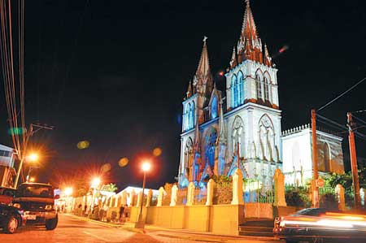
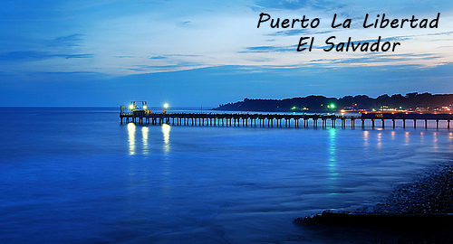

La Libertad es un departamento de El Salvador. Su capital es la ciudad de Santa Tecla, capital también del municipio homónimo. Tiene una extensión territorial de 112 km² y una población de 121,908 habitantes (censo oficial, 2007).
Santa Tecla es una ciudad, municipio y cabecera del departamento de La Libertad en El Salvador. Tiene una extensión territorial de 112 km² y una población estimada de 135 483 habitantes para el año 2014.6También pertenece al Área Metropolitana de San Salvador.
Fue fundada a mediados del siglo XIX con el nombre de Nueva San Salvador, con el propósito de establecer allí a la capital de la República, ya que San Salvador había sido asolada por un terremoto en el año 1854. Con el paso de los años la arquitectura de la ciudad se diferenció del tradicional estilo de la época de la colonización española. Fue una de las poblaciones más afectadas por los terremotos del año 2001, y desde el 2003 es conocida oficialmente como Santa Tecla.
Sus atracciones más importantes se distribuyen a lo largo del km. 30 y el 53. El puerto de la Libertad es el punto de entrada obligatorio y el muelle artesanal original de madera fue construido en 1579. Este puerto sirve de embarcadero de pescadores artesanazas y ofrece un mini mercado donde puede comprar a precios más bajos de los normal un sin fin de mariscos frescos.
Avanzando más hacia el occidente encontrara otras playas como: Conchalio, San Blas, El Cocal, El Majahual y en el km. 42 la playa del Sunzal - segunda playa más popular para la practica del Surf (especialmente entre los meses de Noviembre a Febrero) y famoso por el ambiente relajado de los restaurantes allí ubicados.
